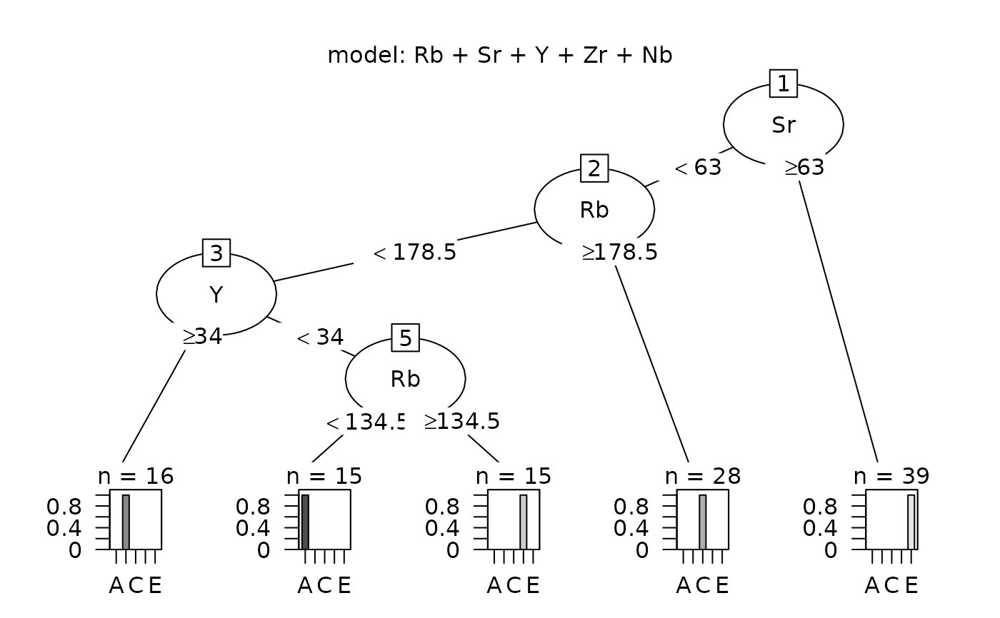

ps_pcaEvaluation
ps_pcaEvaluation.RdCreate principal component plots to evaluate the validity of source predictions: plots show convex hulls of data used to create a tree or random forest analysis and points from predictions plotted with the hulls.
Usage
ps_pcaEvaluation(
doc = "ps_pcaEvaluation",
SourceData,
unknownData,
ID = " ",
SourceGroup,
unknownGroup,
known_sources,
predicted_sources,
AnalyticVars,
Identify = FALSE,
legendLoc = "topright",
plotAllPoints = TRUE,
plotHullsOutsidePoints = TRUE,
plotOutsidePoints = TRUE,
Seed = 11111,
folder = " "
)Arguments
- doc
A string with documentation, default is the function name
- SourceData
A data frame with the data from known sources, including a code for location and element analyses
- unknownData
The corresponding data from unknowns
- ID
The name of the ID for samples (unknowns), " " if none (default value)
- SourceGroup
The name of the variable with the code for a source
- unknownGroup
The name of the variable with the code for predicted source
- known_sources
A vector of the source locations to be considered
- predicted_sources
A vector of predicted sources to be considered, not all need be in known_sources
- AnalyticVars
The elements used in the principal component analyses
- Identify
Logical. If TRUE, the user can identify unknowns of interest and obtain a data set with information on those unknowns (default is FALSE)
- legendLoc
The location of legend added to plots (alternates are "topleft", "bottomright","bottomleft")
- plotAllPoints
Logical. If TRUE (the default), show a plot with two panes: all source points and the convex hulls for the sources, and all unknown points with these source hulls
- plotHullsOutsidePoints
Logical. If TRUE (the default), show a plot with two panes: all source points and the convex hulls for the sources, and the unknown points lying outside of their predicted source convex hulls and these hulls
- plotOutsidePoints
Logical. If TRUE (the default), show a plot with one pane: athe unknown points lying outside of their predicted source convex hulls and these hulls (the second pane for plotHullsOutsidePoints)
- Seed
If not NA, a positive integer used to initialize the random number generator when missing data are imputed_ Default value is 11111
- folder
The path to the folder in which data frames will be saved; default is " "
Details
See the vignette for instructions for identifying points of interest using the paramter Identify = TRUE.
.@return The function produces two plots: the convex hulls of the first two principal components of the source data, and a plot with those convex hulls and the unknown data (this plot uses a principal component analysis of both the source and unknown data). The function returns a list with the following components:
usage: A vector with the contents of the argument doc, the date run, the version of R used
sourceData: The contents of the argument SourceData restricted to knownSources
sourcesNA: A data frame with source observations with missing data for analytic variables; NA if no missing data
unknownData: The contents of the argument unknownData restricted to predictedSources
unknownsNA: A data frame with unknown observations with missing data for analytic variables; NA if no missing data
impError Normalized root mean square error estimate for imputed data; NA if no missing data
params: A list with the values of the grouping and source arguments and values of the logical arguments
analyticVars: A vector with the value of the argument AnalyticVars
tableInOut: A data frame with counts of the numbers of unknowns inside and outside of each predicted source location
ptsOutside: A data frame with the data for unknown points located outside of the predicted source
dataCheck: If Identify=TRUE, a data frame with the observations in dataUsed identified as of interest; value is c(NA,NA) if no points are identified
location: The value of the parameter folder
Examples
# Evaluate the predicted sources of source samples from a tree model,
# Since all predictions are correct, all predictions are inside the source hulls.
data(ObsidianSources)
analyticVars<-c("Rb","Sr","Y","Zr","Nb")
sources <- unique(ObsidianSources[,"Code"])
save_tree <- ps_tree(data=ObsidianSources, GroupVar="Code",Groups="All",
AnalyticVars=analyticVars, ID="ID", Model = "Rb"+"Sr"+"Y"+"Zr"+"Nb",
ModelTitle="Rb + Sr + Y + Zr + Nb", predictSources=TRUE, predictUnknowns=FALSE,
plotTree=TRUE, plotCp=FALSE)

pca_eval <- ps_pcaEvaluation(SourceData=ObsidianSources,
unknownData=save_tree$predictedSource, SourceGroup= "Code", unknownGroup="predicted",
known_sources=sources, predicted_sources=sources, AnalyticVars=analyticVars, ID="ID",
plotAllPoints=TRUE, plotHullsOutsidePoints = TRUE, plotOutsidePoints = TRUE)
# Evaluate Shackley's predicted sources of obsidian artifacts (predicted using scatterplots)
data(ObsidianSources)
data(ObsidianArtifacts)
analyticVars<-c("Rb","Sr","Y","Zr","Nb")
sources <- unique(ObsidianSources[,"Code"])
save_tree <- ps_tree(data=ObsidianSources, GroupVar="Code",Groups="All",
AnalyticVars=analyticVars, ID="ID", Model = "Rb"+"Sr"+"Y"+"Zr"+"Nb",
ModelTitle="Rb + Sr + Y + Zr + Nb", predictSources=FALSE, predictUnknowns=TRUE,
unknownData=ObsidianArtifacts, unknownID="ID",
plotTree=TRUE, plotCp=FALSE)
pca_eval <- ps_pcaEvaluation(SourceData=ObsidianSources,
unknownData=save_tree$predictedSourceUnknowns, SourceGroup= "Code", unknownGroup="predicted",
known_sources=sources, predicted_sources=sources, AnalyticVars=analyticVars, ID="ID",
plotAllPoints=TRUE, plotHullsOutsidePoints = TRUE, plotOutsidePoints = TRUE)
 # Evaluate the predicted artifact sources from a random forest analysis:
# plot only points outside the predicted source hull
data(ObsidianSources)
data(ObsidianArtifacts)
analyticVars<-c("Rb","Sr","Y","Zr","Nb")
sources <- unique(ObsidianSources[,"Code"])
save_randomForest <- ps_randomForest(data=ObsidianSources,
GroupVar="Code",Groups="All",
AnalyticVars=analyticVars, unknownID="ID", NvarUsed=3,
plotErrorRate=FALSE, plotImportance=FALSE,
predictSources=TRUE, predictData=ObsidianArtifacts, plotSourceProbs=FALSE)
pca_eval <- ps_pcaEvaluation(SourceData=ObsidianSources,
unknownData=save_randomForest$predictedSources, SourceGroup= "Code",
unknownGroup="source", known_sources=sources, predicted_sources=sources,
AnalyticVars=analyticVars, ID="ID", plotAllPoints=FALSE,
plotHullsOutsidePoints = FALSE, plotOutsidePoints = TRUE)
# Evaluate the predicted artifact sources from a random forest analysis:
# plot only points outside the predicted source hull
data(ObsidianSources)
data(ObsidianArtifacts)
analyticVars<-c("Rb","Sr","Y","Zr","Nb")
sources <- unique(ObsidianSources[,"Code"])
save_randomForest <- ps_randomForest(data=ObsidianSources,
GroupVar="Code",Groups="All",
AnalyticVars=analyticVars, unknownID="ID", NvarUsed=3,
plotErrorRate=FALSE, plotImportance=FALSE,
predictSources=TRUE, predictData=ObsidianArtifacts, plotSourceProbs=FALSE)
pca_eval <- ps_pcaEvaluation(SourceData=ObsidianSources,
unknownData=save_randomForest$predictedSources, SourceGroup= "Code",
unknownGroup="source", known_sources=sources, predicted_sources=sources,
AnalyticVars=analyticVars, ID="ID", plotAllPoints=FALSE,
plotHullsOutsidePoints = FALSE, plotOutsidePoints = TRUE)